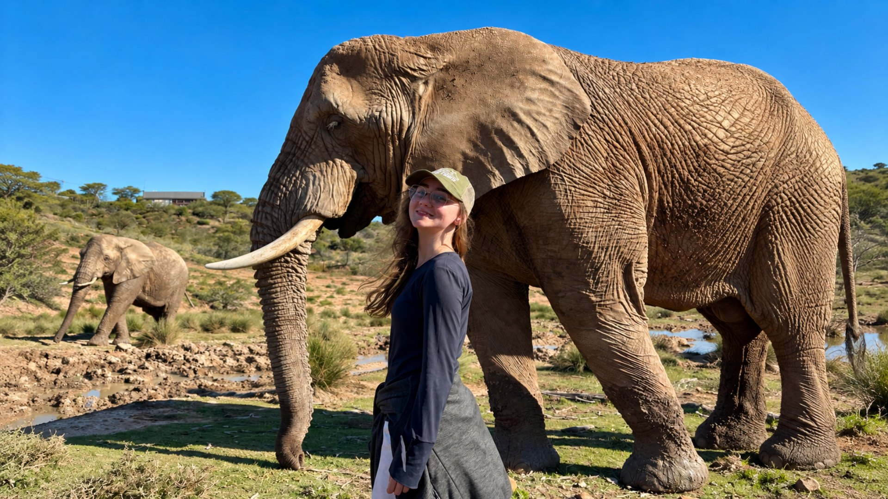
Identidade visual
Guia de Marca
Sumário
01Logotipo
02Cores
03Tipografia
04Formas e elementos
05Fotografia
06Iconografia
07Tom de voz
08Modelos de apresentação
09Materiais
A marca
O mundo está cheio de oportunidades
A Iuvenis garimpa bolsas, intercâmbios e programas internacionais e acompanha cada aluno do ensino médio ao mestrado.
A identidade visual reflete isso: azul de céu aberto, o mapa do mundo ao fundo e cartões que organizam o caminho.

01
Logotipo
Versões, fundos, área de proteção e usos incorretos
01 · Logotipo
Logotipo principal
Símbolo + nomeVersão preferencial. Use sempre que houver espaço na horizontal.
Sempre em minúsculasO nome “iuvenis” no logotipo é escrito em caixa baixa. Em texto corrido, escreva “Iuvenis”.
Arquivo originalNunca redesenhe ou digite o logotipo. Use os arquivos da pasta assets.
01 · Logotipo
O símbolo
O “i” de iuvenis. O ponto é a pessoa; a curva que sobe para a direita é o caminho até o exterior.
Use o símbolo sozinho em espaços pequenos ou quadrados: avatar, ícone de app, selo, abertura de vídeo e topo de seções.
01 · Logotipo
Versões de cor
Branco · preferencial
Petrol
Branco sobre areia
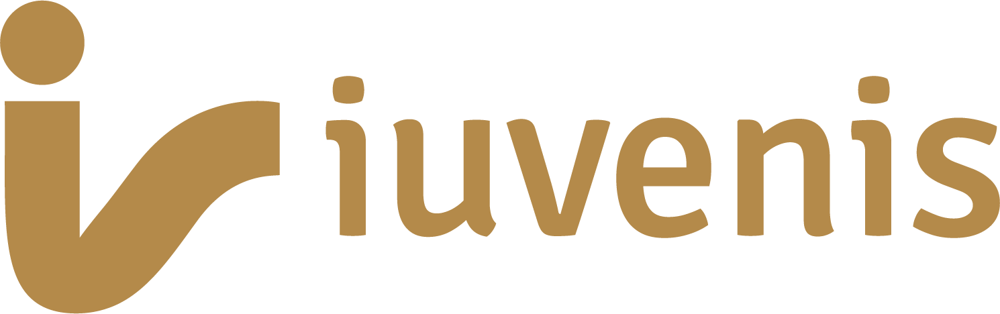
Dourado · só institucional Navy · impressos em 1 cor
Navy · impressos em 1 cor
01 · Logotipo
Logotipo sobre fundos
01 · Logotipo
Área de proteção e tamanho mínimo
Margem mínima = xx é a altura do ponto do símbolo. Nenhum texto, borda ou imagem entra nessa área.
Logotipo completoMínimo de 100 px na tela ou 25 mm impresso, de largura.
SímboloMínimo de 24 px na tela ou 6 mm impresso, de altura.
01 · Logotipo
Logotipo: o que não fazer
02
Cores
Paleta, códigos, proporção e contraste
02 · Cores
Cores principais
OceanHEX #005F8DRGB 0 95 141CMYK 100 33 0 45
MistHEX #D9D9D9RGB 217 217 217CMYK 0 0 0 15
AreiaHEX #A89883RGB 168 152 131CMYK 0 10 22 34
PetrolHEX #02324ARGB 2 50 74CMYK 97 32 0 71
Ocean é a cor da marca. Mist organiza, Areia destaca, Petrol escreve.
02 · Cores
Cores de apoio
Branco#FFFFFF
RGB 255 255 255
CMYK 0 0 0 0
Sky#E9F2FE
RGB 233 242 254
CMYK 8 5 0 0
Azure#2D7FF9
RGB 45 127 249
CMYK 82 49 0 2
Navy#0A1530
RGB 10 21 48
CMYK 79 56 0 81
Gold#B48A4A
RGB 180 138 74
CMYK 0 23 59 29
Branco e Sky: fundos claros, telas de app e jornadas do aluno.
Azure: só em produtos digitais.
Navy e Gold: acentos de materiais institucionais, sobre Petrol.
02 · Cores
Proporção de uso
50%Ocean
25%Mist
12%Branco
8%
5%
Ocean dominaFundos de capas, divisórias e seções de impacto.
Mist organizaCartões e seções de conteúdo. Petrol para o texto.
Areia destacaUm único elemento por composição: o mais importante.
02 · Cores
Combinações de contraste
AaBranco sobre Ocean
AaPetrol sobre Mist
AaOcean sobre Branco
AaBranco sobre Areia · títulos
AaPetrol sobre Sky
AaAreia sobre Ocean
AaBranco sobre Mist
AaAreia sobre Branco
03
Tipografia
Fonte principal, hierarquia e fontes de apoio
03 · Tipografia
Fonte principal: Poppins
Aa
ABCDEFGHIJKLMNOPQRSTUVWXYZ
abcdefghijklmnopqrstuvwxyz
0123456789 ãçéêõú ?!@#%
Light 300
Regular 400
Medium 500
SemiBold 600
Bold 700
Gratuita no Google Fonts
03 · Tipografia
Hierarquia
Título · Light + Bold
100%Um Banco de Oportunidades
Subtítulo · Medium
50%O que te espera aqui:
Título de cartão · SemiBold
40%150h de Aulas
Texto · Regular
entrelinha 1,5O mundo está cheio de bolsas que ninguém te conta. Na Iuvenis, nós garimpamos o que existe de melhor e entregamos mastigado para você.
03 · Tipografia
Destaque em títulos
Um Banco de Oportunidades
que nunca para:
O mundo está cheio de bolsas que ninguém te conta. Na Iuvenis, nós garimpamos o que existe de melhor.
Frase em Light, palavra-chave em Bold, no mesmo título.
Destaque só o que é produto, número ou promessa.
No texto, a primeira frase em negrito apresenta a ideia.
Mais de um destaque por título.
03 · Tipografia
Fontes de apoio
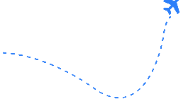
CaveatNotas manuscritas
Seu futuro tem as fronteiras que você delimita
Citações e comentários à margem. No máximo uma nota por peça, nunca em títulos.
Cormorant GaramondSó no fecho de títulos institucionais
Tudo o que você precisa. Em um único lugar.
Em itálico, depois de um título em Poppins. Fundo Petrol, destaque dourado.
03 · Tipografia
Tipografia: o que não fazer
BANCO DE OPORTUNIDADES
Tudo em caixa altaBanco de Oportunidades
Outras fontesAcesse modelos de documentos já usados e aprovados para se inspirar e construir sua versão
Caveat em texto longoUm Banco de Oportunidades que nunca
Destaques aleatórios
04
Formas e elementos
Mapa pontilhado, cartões, composição e ilustrações
04 · Formas
Mapa-múndi pontilhado
O elemento que mais identifica a Iuvenis. Representa o mundo de oportunidades atrás de cada conteúdo.
Pontos brancos com 20–30% de opacidade sobre Ocean.
Uso pontual: algumas capas e seções. A maioria dos slides fica com fundo liso.
Pode ser cortado nas bordas; os continentes devem continuar reconhecíveis.
Atrás de textos, coloridos, deformados ou sobre fotos.
04 · Formas
Cartões
150h de AulasTodo o conteúdo organizado do zero ao avançado
Mist · conteúdoFundo #D9D9D9, ícone e texto Petrol
Banco de OportunidadesListas de programas que recomendamos
Areia · destaqueUm por composição, ícone e texto brancos
Aulas PráticasComo encontrar as melhores oportunidades
Ocean · sobre claroPara seções Mist ou brancas
Cantos de 16 px · sombra suave azulada · conteúdo centralizado: ícone, título, descrição
04 · Formas
Cartões de vidro
Aulas gravadas150h de conteúdo
ModelosEssays, cartas e CVs
ComunidadeAlunos e aprovados
IuNews10 oportunidades por quinzena
Branco 10% de fundo, borda branca 22%, cantos de 16 px.
Só sobre Ocean ou Petrol lisos.
Texto e ícone brancos; descrição em Mist.
Um cartão pode ser Areia para destacar.
Sobre fotos, mapa pontilhado ou fundos claros.
04 · Formas
Composição em tríptico
1Três colunas unidas, laterais em Mist.
2Coluna central em Areia, mais alta, sobreposta às laterais.
3Sombra profunda e o mapa pontilhado ao fundo.
4O símbolo e a pergunta acima: “O que te espera aqui:”
150h de AulasDo zero ao avançado
Histórias ReaisAlunos aprovados
Banco de Oportunidades
Aulas Exclusivas IuNews
Modelos de DocumentosJá aprovados
Aulas Práticas40+ tipos de bolsa
04 · Formas
Ilustrações e notas manuscritas
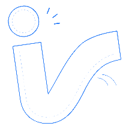
Símbolo em traçoAvião e rota tracejada
Traço fino azul sobre fundos Sky, nas bordas da peça, com uma nota em Caveat. Exclusivo de produtos digitais e jornadas do aluno.
05
Fotografia
Campus, alunos e regras de tratamento
05 · Fotografia
Fotos de campus
Arquitetura icônica, céu azul e luz do dia.
Formato retrato · cantos de 8 px · faixa contínua que sai pelas bordas
05 · Fotografia
Fotografia: faça e evite
Cores naturais
Preto e branco
Filtros pesados
Alunos: fotos reais, de celular, em frente à universidade ou cidade onde estudam. Logo da universidade em branco sobre o degradê.
Evite: banco de imagens genérico, pessoas posadas em escritório, baixa resolução.
06
Iconografia
Estilo, cores e tamanhos
06 · Iconografia
Ícones preenchidos
Biblioteca de referência: Phosphor Icons, peso Fill · Petrol sobre claro, branco sobre Ocean e Areia
06 · Iconografia
Ícones: regras
Ícone com cerca de 1,5× a altura do título do cartão · sem emojis em materiais da marca
07
Tom de voz
Como a Iuvenis escreve
07 · Tom de voz
Como a Iuvenis fala
PróximaFala com “você”, como um mentor que já fez o caminho.“Entregamos mastigado para você.”
ConcretaNúmeros, nomes e prazos no lugar de promessas vagas.“150h de aulas. Mais de 40 tipos de intercâmbio.”
AspiracionalMostra que o sonho internacional é possível a partir do zero.“Saíram do absoluto zero e hoje vivem o sonho internacional.”
07 · Tom de voz
Escrita: faça e evite
Faça
Evite
“Acesse modelos de documentos já aprovados.”
“Garantimos a sua aprovação.”
“As 10 melhores oportunidades da quinzena.”
“Oportunidades incríveis que vão mudar sua vida!!!”
“Aprovados em Yale e Stanford.”
“Aprovados nas melhores universidades do planeta 🚀”
“Em que momento você está?”
“Selecione seu nível de escolaridade atual.”
08
Modelos de apresentação
Tipos de slide, ritmo, capas e seções prontas para duplicar
08 · Modelos
Os tipos de slide
08 · Modelos
Ritmo: alterne os modelos
Troque o fundoNunca mais de dois slides seguidos com o mesmo fundo. Gire entre Ocean, Branco e Mist.
Troque o formatoDepois de um slide de texto, use foto, número ou cartões. Repita um modelo no máximo a cada quatro slides.
Ocean marca o ritmoCapa, divisórias e fim abrem e fecham blocos. Sky só para perguntas; Petrol com dourado para o bloco institucional.
08 · Modelos
Organização de um slide
1 · Rótulo da seçãosímbolo
2 · Título com destaque
3 · Conteúdo: cartões, foto ou número
4 · Nota de rodapé (opcional)
Margens100 px nas laterais, 90 px no topo, 80 px na base.
TamanhosTítulo 64–72 px · texto 28–32 px · rótulo 24 px. Nada abaixo de 24 px.
Uma ideia por slideNo máximo três linhas de texto corrido ou seis itens curtos.
Um destaque AreiaSe houver cartões, só um recebe Areia: o mais importante.
Aula aberta
Como conseguir uma
bolsa no exterior
Nome do mentor · 12 de março
Guia de destinoEstudar no Reino Unido
Bolsas, prazos e documentos para 2027
@iuvenisoficial
Plano anual Iuvenis
Tudo o que você precisa para sair do zero até a aprovação em um programa internacional.
Um Banco de Oportunidades
que nunca para
Apresentação para escolas parceiras
Aula aberta
Seu primeiro passo
para estudar fora
Nome do mentor · 12 de março
Guia de destino
Bolsas na Europa
Programas abertos para 2027
@iuvenisoficial
Intercâmbio
Voluntariado na
África do Sul
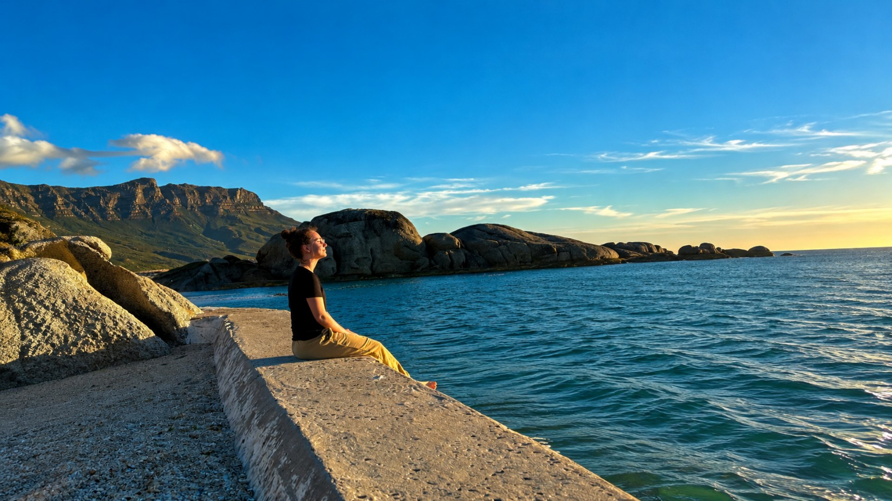
CAPE TOWN
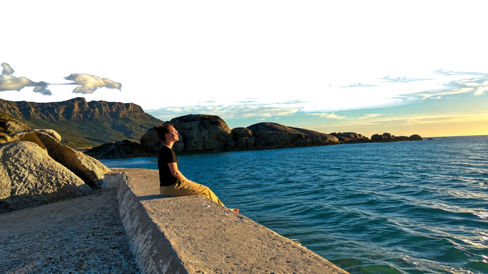
 OPORTUNIDADES
OPORTUNIDADES
Redes sociais
Regras para posts
Título com no mínimo 48 px e texto com 28 px (na arte de 1080 px).
Uma ideia por página; no máximo 40 palavras.
Símbolo ou logotipo pequeno no canto e pontinhos do carrossel.
Até um emoji, no fim do gancho.
Fotos reais de alunos, com autorização de uso de imagem.
Texto nas faixas listradas dos stories: os botões do Instagram cobrem.
Capas de conteúdo
Carrossel 4:5 · fotos reais
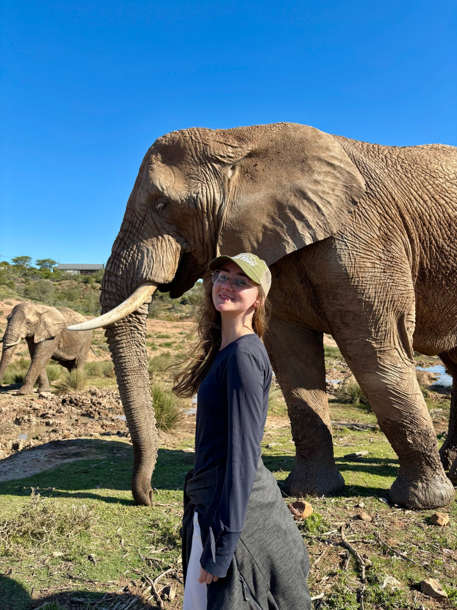
ÁFRICA
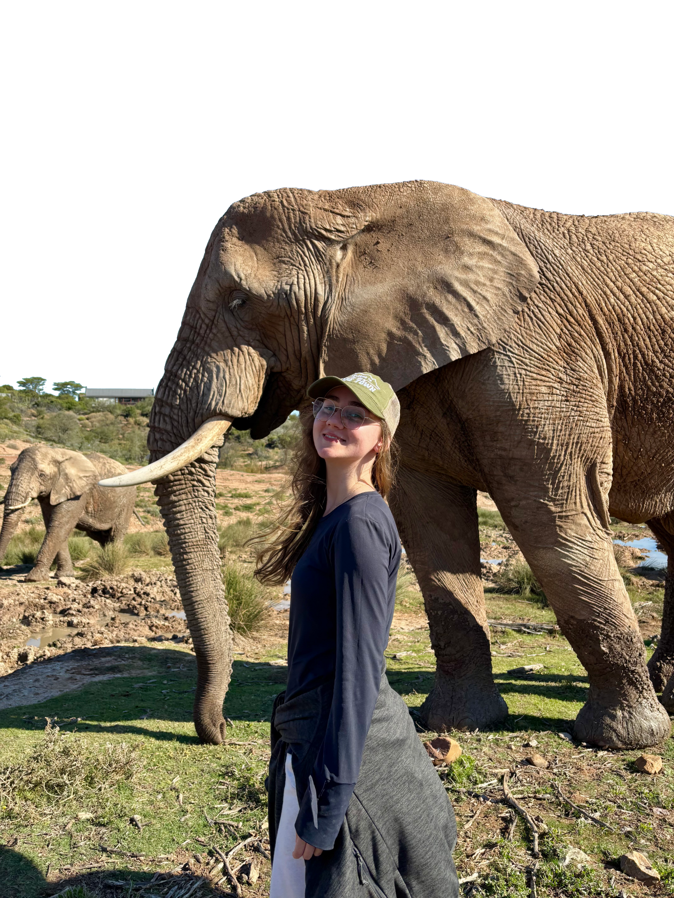
5 bolsas para
voluntariado
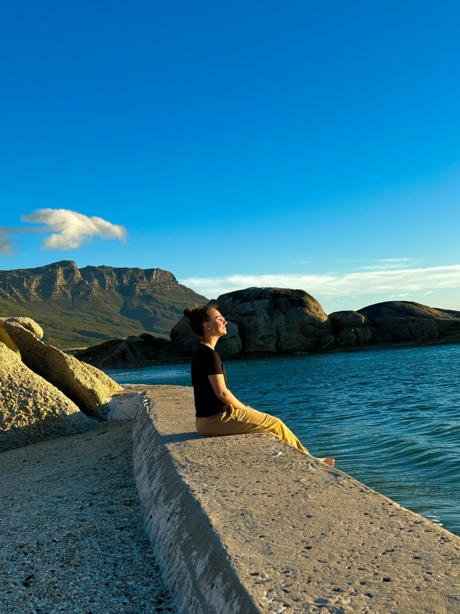
CAPE
TOWN
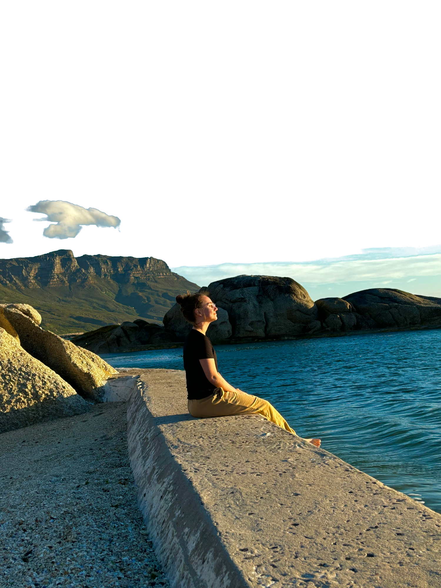
Quanto custa morar lá
O que ninguém te conta sobre estudar fora
Posts: capa com legenda
Foto real + legenda em caixa branca
10 Oportunidades com
Inscrições Abertas
Do ensino médio ao pós-doc
5 bolsas para professores e para
quem é da área de educação
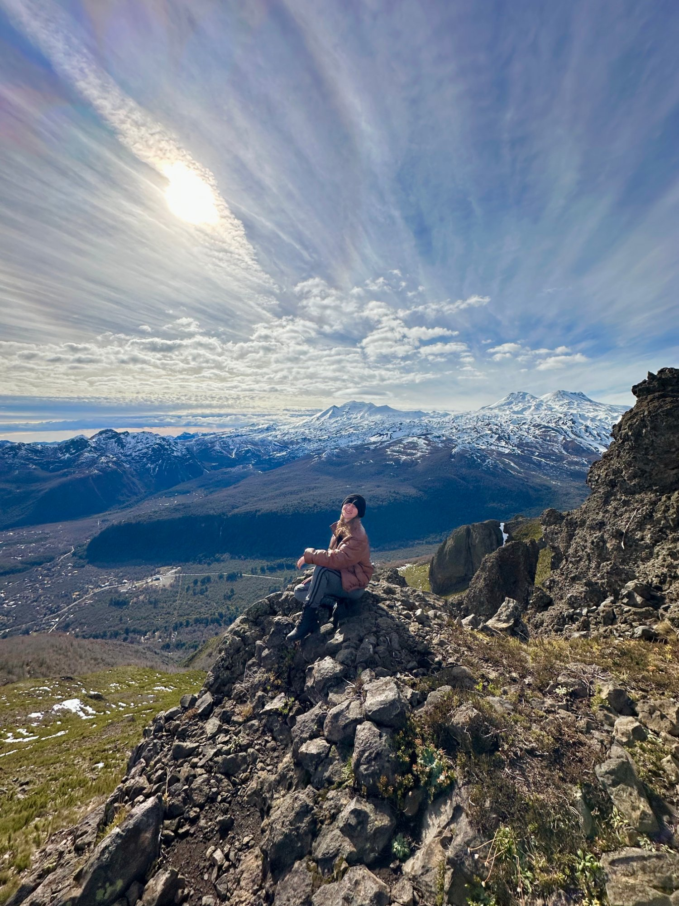
Bolsa de €23 mil para artistas
de qualquer país (Espanha)
Posts: só texto
Gancho forte, fundo liso
4 vagas abertas de voluntariado online da ONU (2 delas em português!)Dá pra fazer de casa e ganhar certificado da ONU
Agora a conclusão, do jeito que ela escreveu:“But high school is starting to smell like leftovers to me now; I want fresh, new, crisp learning. I'm ready for the university.”— essay aprovado em Yale
As 10 melhores oportunidades da quinzena
Posts: páginas do carrossel
Comparação, vaga numerada, dado
TOEFL, IELTS ou Duolingo:qual fazer pra cada bolsaTOEFLiBT
xIELTSAcademic
xDETDuolingo
1Youth Voices (FAO, online)Criar posts para uma campanha da ONU. Experiência não é obrigatória. Inscrições até 29/10.Print da página da vaga
2Assistente de Projetos (OIM)Vaga presencial em Madagascar por 9 meses, com ajuda de custo mensal. Inscrições até 29/10.Print da página da vaga
Carrossel: modelos da marca
Metodologia · Dúvidas · Mentores
MetodologiaOs três pilares Iuvenis
Candidato
Candidatura
Oportunidades
Possíveis dúvidasVamos alinhar as expectativas
“Meu inglês não é fluente.”Muitos programas aceitam o certificado depois.
“Não tenho dinheiro.”Existem bolsas integrais e parciais.
“Estou no ensino médio.”Quanto antes, melhor.
“Quanto tempo leva?”De 6 a 12 meses por candidatura.
Quem já chegou láAprenda com quem foi aprovado
Conheça os mentores →
Carrossel: modelos da marca
Caminho · Fotos e palavras · Conteúdo
O caminhoEncurtamos o caminho entre o
sonho e a aprovação
CuradoriaO que importa pro seu perfil
DocumentosModelos já aprovados
ComunidadeTroca com aprovados
BOLSASo caminho até a aprovação
MENTORIAo caminho até a aprovação
VISTOo caminho até a aprovação
Como escrever a sua carta de motivaçãoComece pela sua história. Depois conecte com o programa e feche com o seu objetivo.
Documentos
Essays, cartas e currículo
03
Bolsas nos EUA
Programas, prazos e documentos
Título da apresentação
Subtítulo em uma linha
Nome do apresentador · Data
Tema da seção
Título com destaque
Primeira frase em negrito com a ideia principal. Texto de apoio com no máximo três linhas para manter o slide legível.
Título com três pontos
Ponto umDescrição curta em até duas linhas
Ponto principalO item mais importante fica no centro
Ponto trêsDescrição curta em até duas linhas
150h
de aulas práticas
Um dado de impacto por slide. Número em Ocean Bold, legenda em Light com destaque.
Um Banco de Oportunidades
que nunca para:
O mundo está cheio de bolsas que ninguém te conta. Na Iuvenis, nós garimpamos o que existe de melhor.
Tema da seção
O que muda com a mentoria
DireçãoUm plano com os programas certos para o seu perfil.
DocumentosModelos já aprovados para essays, cartas e currículo.
PrazosCronograma de cada candidatura, mês a mês.
Tema da seção
Do zero à aprovação
1PerfilMapeamos nível, área e objetivo.
2ProgramasSelecionamos bolsas e universidades.
3DocumentosConstruímos cada peça com modelos.
4AprovaçãoEntrevistas, visto e embarque.
Onde nossos alunos estão hoje
Membros que saíram do absoluto zero e hoje vivem o sonho internacional.
Eduardo HenriqueOxford · Reino Unido
Lara MelCoimbra · Portugal
Manuela ZanchettaSiena · Itália
“
Eu não sabia nem por onde começar. Hoje estudo em Coimbra.
Lara MelAluna Iuvenis · Universidade de Coimbra
O que você encontra
Tudo o que você precisa.Em um único lugar.
150h de conteúdoVídeo-aulas e masterclasses gravadas.
Área de membrosMaterial por trilha, nível e programa.
Comunidade ativaTroca com candidatos e aprovados.
Modelos de documentosEssays, cartas e CVs prontos.
Guias e e-booksDo resume ao visto.
IuNews quinzenalAs 10 melhores oportunidades.
BOLSASBANCO DE BOLSAS
JÁ ORGANIZADOS
SUPORTEQuem já foi aprovado te mostra o caminho
DOCUMENTOSModelos já aprovados para se inspirar
O que forma a Iuvenis
Aulas150h do zero ao avançado
+
ModelosDocumentos já aprovados
+
OportunidadesBanco atualizado toda quinzena
=
O caminho
Encurtamos o caminho entre o sonho
e a aprovação
HojePlanoDocumentosCandidaturaAprovação
CuradoriaFiltramos as oportunidades para você.
DocumentosModelos aprovados para cada etapa.
SuporteEncontros individuais com mentor.
Um passo de cada vez
até o embarque
320 XP
Sua jornada
Perfil100 XP
Filtramos o que importa para
o seu perfil.
3DocumentosEm andamento
Candidatura300 XP
Aprovação500 XP
Suas conquistas
3 de 6
Perfil completoConquistado
Primeiro essayConquistado
Teste de inglêsConquistado
1ª candidaturaBloqueado
EntrevistaBloqueado
AprovadoBloqueado
Próximo selo: 1ª candidatura · faltam 80 XP
Semana 4
Missões da semana
Pequenas tarefas que fazem a candidatura andar. Cada uma vale XP.
Assistir à aula de essays+20 XP
Escolher 3 programas no Banco+30 XP
Escrever o primeiro rascunho+50 XP
Pedir carta de recomendação+40 XP
Ler a IuNews da quinzena+10 XP
Desafio da turma
7 dias de essays
Escreva um parágrafo por dia. Quem completar ganha o selo e 150 XP.
Ranking
1ºAna Beatriz1.240 XP
2ºPedro Lima1.180 XP
3ºJúlia Souza1.050 XP
4ºVocê980 XP
5ºRafael Costa920 XP
Quem já chegou lá
Aprenda com quem foi aprovado
Mentores e alunos que saíram do absoluto zero e hoje estudam nas melhores universidades do mundo.
Conhecer os mentores →
Ecossistema
Área de membros150h de conteúdo
ModelosEssays, cartas e CVs
Banco de OportunidadesProgramas e bolsas
Mentoria individualReuniões 1:1 com mentor
IuNews10 oportunidades por quinzena
Metodologia CandidatoQuem você é: perfil, histórico, objetivos e história pessoal.
CandidaturaComo você se apresenta: essays, cartas, CV e entrevistas.
OportunidadesOnde você aplica: bolsas e programas certos para o seu perfil.
Vamos alinhar as expectativas
“Meu inglês não é fluente.”Muitos programas aceitam certificado depois. Montamos o plano de prova junto com você.
“Não tenho dinheiro para estudar fora.”É para isso que existe o Banco de Oportunidades: bolsas integrais e parciais.
“Ainda estou no ensino médio.”Quanto antes, melhor. Há trilhas específicas para graduação fora.
“Quanto tempo leva?”Uma candidatura completa leva de 6 a 12 meses, dependendo do programa.
Comece hoje a sua candidatura
Quero fazer parte
Plano anual
Aulas, modelos, Banco de Oportunidades e IuNews
iuvenisoficial.com
09
Materiais
E-mails, PDFs, certificado e produtos
09 · Materiais
Newsletter IuNews
ComputadorIuNews · As 10 oportunidades da quinzena
As 10 oportunidades da quinzena
Edição 24 · 2ª quinzena de outubroOlá, Ana. Selecionamos bolsas, programas e vagas com inscrições abertas.
Destaque da quinzenaMestrado · Reino UnidoBolsa integral de mestrado no Reino UnidoUm ano de mestrado com mensalidade, passagens e custo de vida cobertos.Prazo: 05/11 · Cobertura: integralVer oportunidade completa →
Programa onlineYouth Voices · FAOPrograma da ONU para jovens que atuam com alimentação e clima.Prazo 29/10 · OnlineVer oportunidade →
VoluntariadoProjetos em MadagascarNove meses com ajuda de custo e moradia.Prazo 10/11 · 9 mesesVer oportunidade →
GraduaçãoCurso de verão em LisboaTrês semanas com bolsa parcial para brasileiros.Prazo 20/11 · Jan/2027Ver oportunidade →
Celular9:41100%
Edição 24
As 10 oportunidades da quinzenaDestaqueMestrado · Reino UnidoBolsa integral de mestrado no Reino UnidoMensalidade, passagens e custo de vida cobertos.Prazo 05/11 · IntegralVer oportunidade →OnlineYouth Voices · FAOVer oportunidade →
09 · Materiais
E-mails de relacionamento
Boas-vindas · carta da fundadoraIuvenis
boas-vindasUma carta para vocêEdição de boas-vindas
Carta da fundadora
Que bom ter você aqui, Ana.Eu também já estive no seu lugar, sem saber por onde começar e com medo de não ter o perfil certo. Foi estudando fora que entendi que o caminho tem método, e é isso que vamos construir juntas. Nos próximos dias a equipe vai marcar a sua call de onboarding. Até lá, a área de membros já está aberta para você.
Com carinho, MariaFundadora da Iuvenis
Abrir a área de membros →@iuvenisoficial · Preferências · Cancelar inscrição
Comunidade · edição do mêsComunidade · Outubro
Outubro na IuvenisHistória do mês"Achava que não tinha perfil. Hoje faço mestrado em Lisboa com bolsa."Júlia, aluna do plano anualLer a história completa →
Nova aulaComo pedir cartas de recomendaçãoQuem escolher e como fazer o pedido.
Novo materialModelo de CV acadêmicoPronto para editar na pasta Modelos.
@iuvenisoficial · Preferências · Cancelar inscrição
09 · Materiais
Capas de PDF
ApresentaçãoMentoria Iuvenis
Guia do alunoComo escrever o seu essay
09 · Materiais
Capas de PDF · continuação
Guia de destinosUniversidades na Europa
Revistaiuvenis
Um semestre na Cidade do CaboMariaFundadora da Iuvenis
"Estudar fora mudou a minha rota."Edição 12Outubro 2026
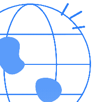
Calendário deBOLSAS2027
09 · Materiais
Capa revista · modelo principal
E-bookiuvenis
Programas, custos e como se candidatarVoluntariadona ÁfricaGuia completo 2027
Guia do alunoVol. 3
Guiaiuvenis
Estudar naCidade do CaboUniversidades e bolsas
Guia de destino2027
@iuvenisoficialiuvenis
Do Brasilao topoMinha história
Arraste →1/6
Modelo principal para e-books, guias e capas de carrossel. Palavra grande atrás da pessoa (foto recortada por cima) · título Light + Bold embaixo · linha fina com edição e data
09 · Materiais
Páginas internas · modelo revista
EntrevistaQual foi o momento que mudou a sua rota?Foram vários, mas um deles foi o meu primeiro intercâmbio. Escolhi o primeiro programa quase por acaso, numa lista que uma amiga me mandou. Não tinha ideia de como montar uma candidatura e fui aprendendo errando: refiz o currículo três vezes e reescrevi a carta de motivação do zero.
Quando recebi a aprovação, entendi que o processo tinha método. Dava para ensinar. Foi aí que comecei a ajudar outros estudantes a se candidatar, primeiro amigos e depois desconhecidos que chegavam pelo Instagram.
Hoje a Iuvenis reúne alunos de todo o Brasil. O que mais me orgulha é ver alguém que achava que estudar fora era impossível embarcar com bolsa.
Iuvenis · Guia do aluno14O que você diria para quem está começando?Que comece pela informação certa. A maioria desiste antes de tentar porque acha que precisa ser rico ou fluente. Existem bolsas para perfis muito diferentes, e o primeiro passo é saber onde procurar.
Iuvenis · Guia do aluno · 15 Candidatura
Como montar uma candidatura competitivaOs comitês leem centenas de perfis. O que faz o seu ser lembrado.Uma candidatura forte conta uma história coerente: o histórico explica o objetivo, e o objetivo explica por que aquele programa. Escolhi o primeiro programa quase por acaso, numa lista que uma amiga me mandou. Não tinha ideia de como montar uma candidatura e fui aprendendo errando: refiz o currículo três vezes e reescrevi a carta de motivação do zero.
"O comitê não procura o aluno perfeito. Procura quem sabe explicar para onde vai."
Coerência é o que conectaQuando recebi a aprovação, entendi que o processo tinha método. Dava para ensinar. Foi aí que comecei a ajudar outros estudantes a se candidatar, primeiro amigos e depois desconhecidos que chegavam pelo Instagram. Revise cada documento perguntando: isso reforça a mesma história?
Iuvenis · Guia do aluno23